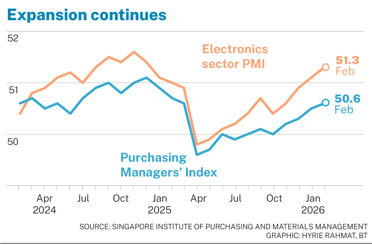
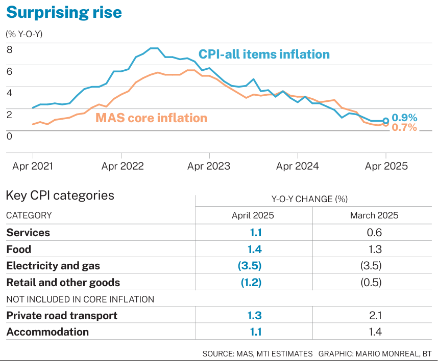
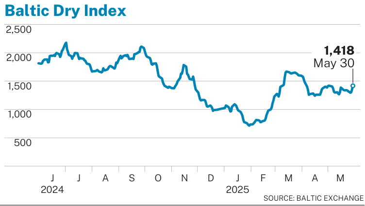
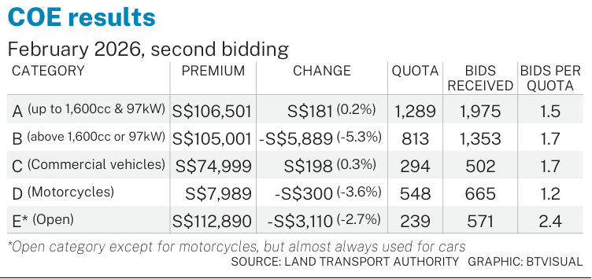
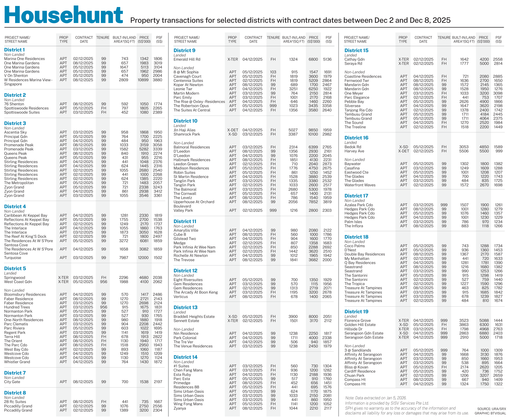
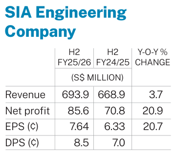

Newsroom chart automation
A single source of truth for chart contracts, renderers, and regression — so web apps, scheduled jobs, and AI agents produce the same print and Datawrapper outputs.
Problem
The same chart logic lived in more than one place: a newsroom web application and scheduled delivery jobs. Each copy drifted — duplicated adapters, inconsistent skins, and harder visual QA.
Approach
I helped centralize generation into a Python package with a clear model: chart family → newsroom profile → recipe → renderer. Callers own data access, secrets, and delivery; the package owns “how to draw” and “how to assemble payloads.”
source data → adapter → canonical payload canonical payload + recipe → renderer recipe = family + newsroom skin + output target + eval policy
What it produces
- Print PDF — editable/vector output with newsroom size and color constraints
- Preview PNG — fast review artifact for humans and evals
- Datawrapper payload — CSV + metadata for dry-run or publish
The same recipe can also be exercised through a CLI, HTTP API, or MCP server so agents and services share one contract.
Coverage snapshot






Quality bar
Print PDF is the canonical artifact. Fixtures + hard visual references gate merges; heatmaps and side-by-side diffs are review aids, not silent overwrite paths. Coverage states make it obvious which recipes are production-protected versus diagnostic-only.
Impact
- One installable package instead of copied renderers across apps and jobs
- Newsroom skins selected by recipe — chart logic stays brand-agnostic
- Agent-ready surfaces (skill / MCP / API) without a second implementation
Stack
Python 3.10+, ReportLab, Datawrapper payloads, pytest / chartbook fixtures, optional FastAPI-style HTTP and MCP adapters.
Source repository is internal. This page is a public case study with representative samples; ask for a private walkthrough if relevant.